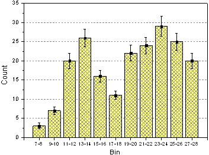
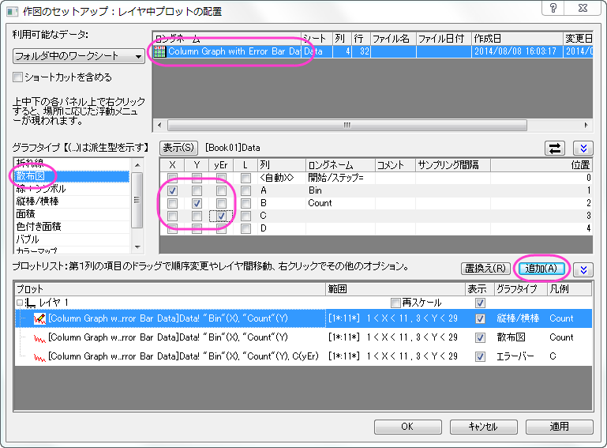
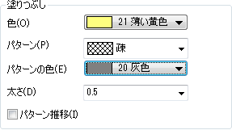
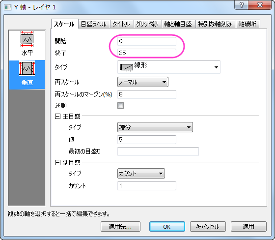
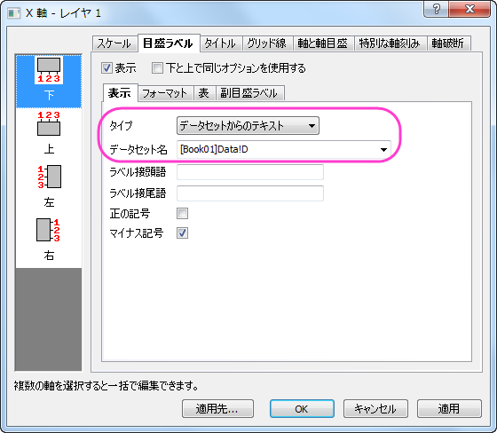
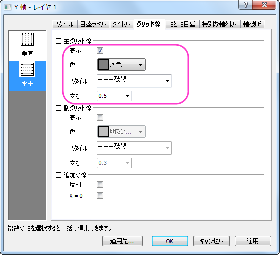

エラーバー付きの縦棒グラフ
ColumnGraph-ErrorBar
サマリー
このグラフは縦棒グラフにエラーバーを追加する例を示しています。1つは散布図として、もう1つは縦棒グラフとして、同じYデータを2回プロットします。このとき、エラーバーは散布図に関連付いています。エラーバーは、XY両方向でグラフに追加できます。
- 
必要なOriginのバージョン:2015SR0
学習する項目
- 縦棒グラフを作成し、編集する
- 作図のセットアップダイアログを使って、グラフに新しいデータプロットを追加する
ステップ
このチュートリアルは、チュートリアルデータプロジェクト（<Origin EXE フォルダ>\Samples\TutorialData.opj）と関連しています。(プロジェクトが無い場合、データファイルをここから ダウンロードしてください)
- Tutorial Data.opjを開き、PColumn Graph with Error Bars フォルダを開きます。ワークシートをアクティブにし、列のXY属性が X, Y, Y Error , Label であることを確認します。
- 2列目を選択し、作図：棒、円、面積：棒グラフと選択して棒グラフを作成します。
- グラフウィンドウをアクティブにして、グラフ操作：作図のセットアップを選択し、作図のセットアップダイアログを開きます。上向き三角形のアイコンをクリックして上にあるほか2つのパネルを開きます。以下のようにそれぞれ散布図とエラーバーのデータを追加します。

 | 作図のセットアップダイアログで3つのパネルを全ての表示するために ボタンをクリックしてグラフタイプパネルを開き、再度をクリックして利用可能なデータパネルを開きます。 ボタンをクリックしてグラフタイプパネルを開き、再度をクリックして利用可能なデータパネルを開きます。
詳細な情報は作図のセットアップで作図を参照してください。
|
追加ボタンをクリックして、縦棒グラフに散布図を追加します。そして、OK をクリックして、縦棒グラフウィンドウに戻ります。
- 縦棒グラフをダブルクリックして、「作図の詳細」ダイアログを開きます。プロット属性のパターンタブで次のように設定します。

- Y軸上でダブルクリックして軸ダイアログを開きます。Y 軸を次の画像で示すように設定します。

- 目盛ラベルタブに移動し、X 軸の目盛ラベルを以下の図のように設定します。

- グリッド線タブを開き、左側パネルで水平アイコンをクリックします。これでY軸のグリッド線を編集できます。主グリッド線の設定を、次の画像のように設定します。

- まず適用をクリックしましょう。次にCtrlキーを押しながら左側パネルの垂直と水平、両方のアイコンをクリックします。そのまま、同じグリッド線タブの追加の線グループにある反対にチェックを付けて、反対側の線をXとY軸の両方に表示します。
- OK をクリックして設定を適用し、軸ダイアログを閉じます。最後に、凡例を削除します。